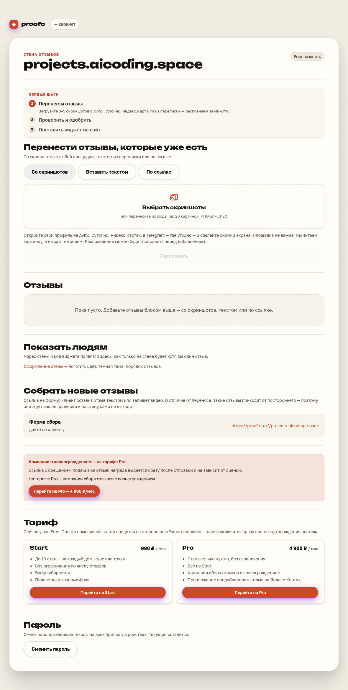
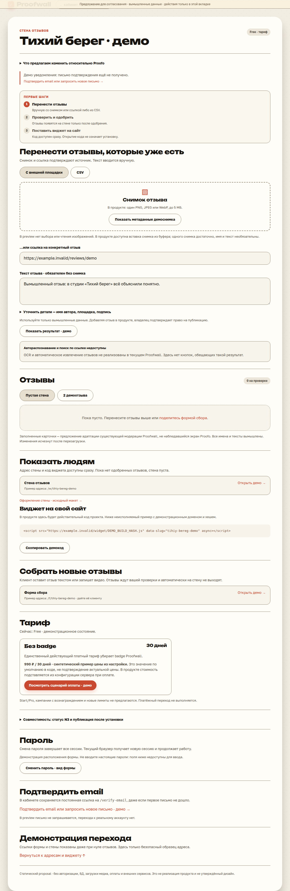
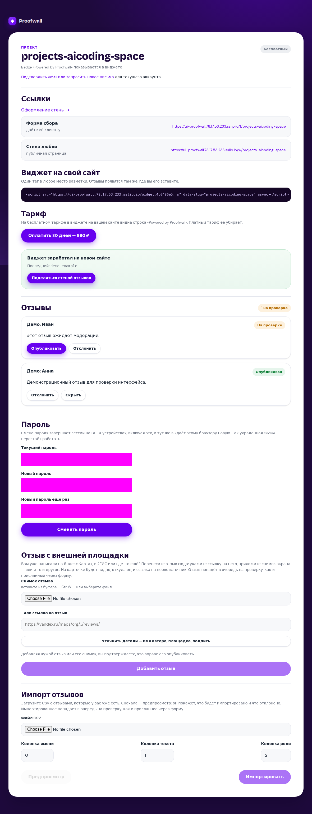
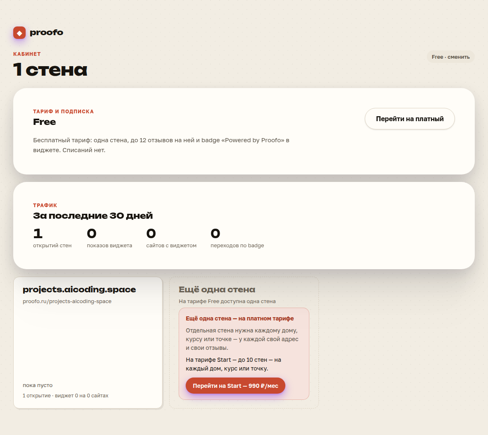
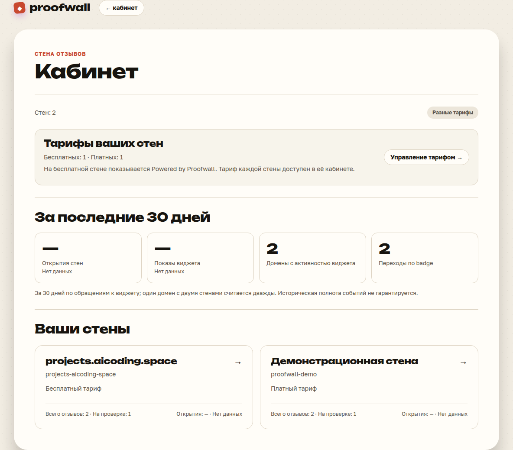
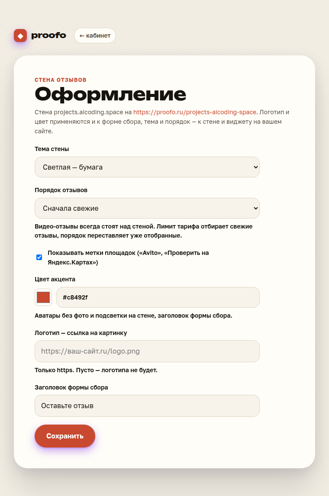
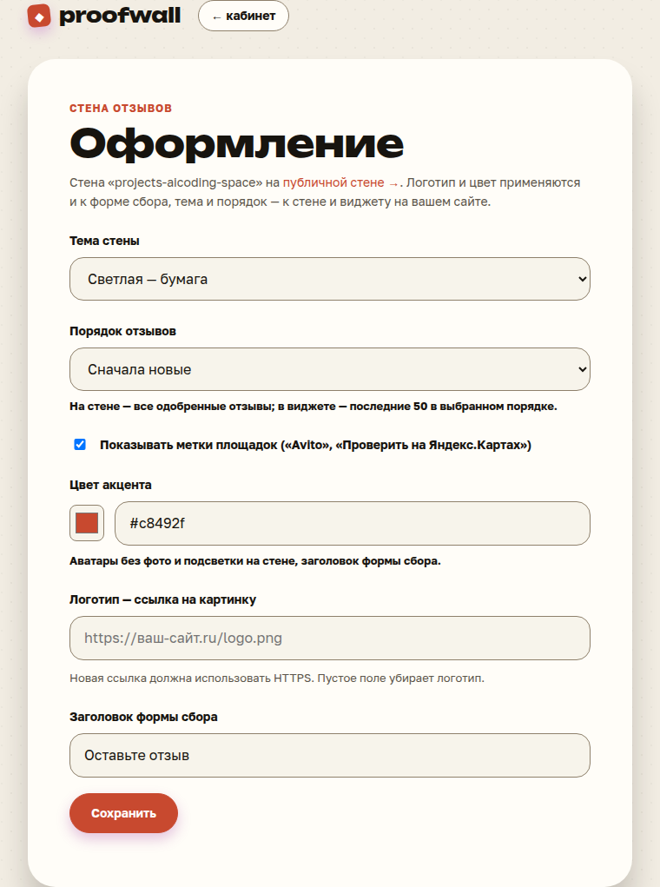
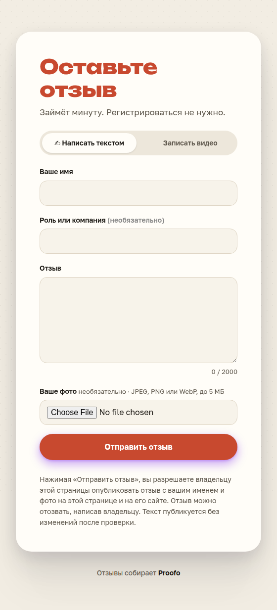
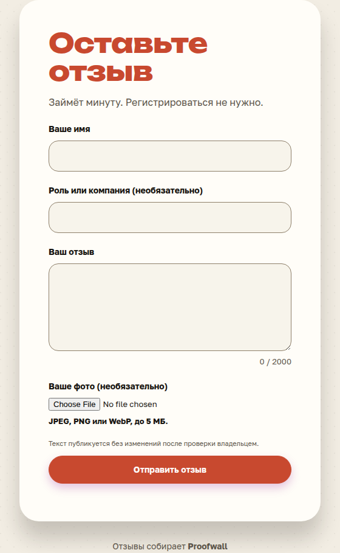

Повторная сверка · 16 ноября 2026
Proofo и Proofwall: где разошёлся кабинет
Последний макет адаптирован под текущие возможности Proofwall. Главное расхождение — основной путь переноса отзывов; одного совпадения палитры и шрифтов недостаточно.
Ниже свежие снимки живого Proofo, работающего Proofwall и последнего статического предложения. Изменения в приложение этим сравнением не вносились.
| Область | Proofo | Наше расхождение |
|---|---|---|
| Импорт | Изображения, простой текст и ссылка | Ручной перенос и CSV; другой основной сценарий |
| Обзор | Раздельные карточки и крупный счётчик | Единый лист; композиция отличается |
| Публикация | При пустой стене вставка ещё закрыта | Адрес и код доступны сразу |
| Оформление | Есть порядок по оценке | В редакторе только два временных порядка |
| Форма | Текст и видеопуть | На стенде доступен текст; видео flag выключен |
| Тарифы | Два предложения и кампании | Одно предложение; кампаний нет |
Кабинет стены
Нажмите на снимок для просмотра в исходном размере.



Обзор стен
Нажмите на снимок для просмотра в исходном размере.


Оформление
Нажмите на снимок для просмотра в исходном размере.


Сбор отзывов
Нажмите на снимок для просмотра в исходном размере.


Что проверено и что пока неизвестно
Проверены вкладки импорта, предпросмотр одной вымышленной текстовой строки, раскрытие и отмена пароля, оформление и формы текста/видео. Отзывы, файлы, OCR, оплата и кампании не отправлялись. В предоставленном Proofo доступен Free и пустой проект: заполненная модерация, результаты OCR и платные кабинеты пока не подтверждены.
Аккаунты и данные разные. Число стен, значения трафика и имена демоавторов не считаются ошибками соответствия. Это сравнительный аудит, не попиксельный тест. На публичных снимках main нет профиля, cookies или реквизитов доступа; email и доступ обезличены в локальном DOM, password/email поля замаскированы.
Старый zero-diff относился к нашему закреплённому макету. Он не доказывает тождественность живому оригиналу. Сначала следует вернуть исходный сценарий и структуру, затем проверять их на реальном приложении.